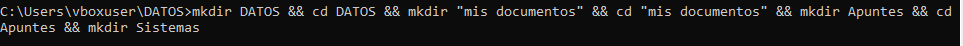
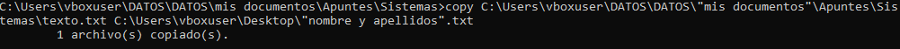
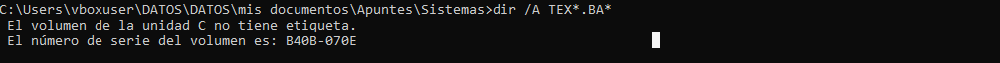
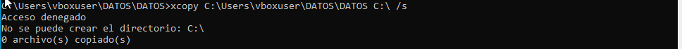
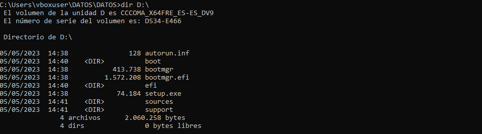
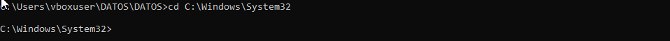
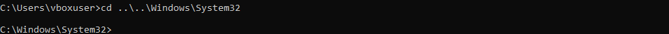

El objetivo de esta memoria es documentar todo el proceso de instalación de Lubuntu.
1. Indica las diferencias, en cuanto a las particiones del disco, que existe al instalar un SO Windows sobre una UEFI y sobre Legacy.
El sistema EFI tiene una partición adicional, la cual es la encargada de la recuperación (MSR)
2. Que relación tiene la respuesta del ejercicio anterior con la tabla de particiones MBR y GPT.
Que la tabla GPT tiene una partición de recuperación, mientras que la tabla MBR no.
3. Ejecuta el comando “msinfo32.exe” e indica donde puedes comprobar el firmware de la BIOS. En este caso se debe realizar a través de una máquina virtual de Windows 11 o Windows 10 que deberéis descargar del repositorio.
6. Sin moverte del directorio DATOS, crea un tu carpeta Mis Documentos un directorio llamado Apuntes, que a su vez contenga un directorio llamado Sistemas. Todo en un único comando.

9. Copia el fichero texto.txt a tu escritorio y con el nombre nombre y apellidos.txt (con los espacios incluidos).

14. Borra el directorio Apuntes con todo su contenido utilizando un único mandato.

15. Ejecuta el mandato DIR utilizando los comodines para que sólo muestre los archivos que empiezan por TEX y cuyos 2 primeros caracteres de la extensión sean BA.

16. Crear el fichero salida.txt a partir de la salida redireccionada del mandato DIR anterior.

8. Desde el directorio DATOS (actual) y utilizando el mandato XCOPY y las rutas absolutas, copia todo el contenido del directorio PRACTICA incluyendo los subdirectorios, a un nuevo directorio llamado DOCS, que colgará directamente desde el directorio Raíz. Utiliza la ayuda. Mira el parámetro /S

12. Escribe la secuencia de mandatos necesaria para ver el contenido del directorio raíz de la unidad de CD pero si falla (por no haber CD), que muestre el contenido del directorio raíz de tu pendrive.

13. Utilizando una ruta absoluta cambia de directorio y sitúate en el directorio System32, que a su vez se encuentra en C:\Windows.

14. Utilizando una ruta relativa, sitúate en la carpeta personal del usuario alumno.
